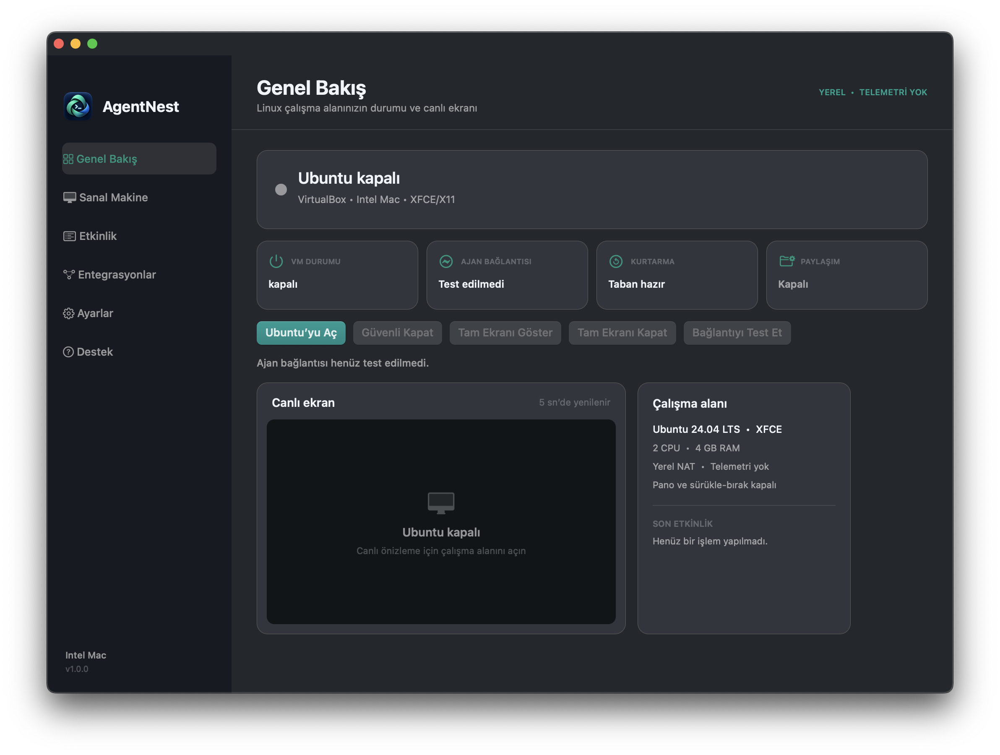
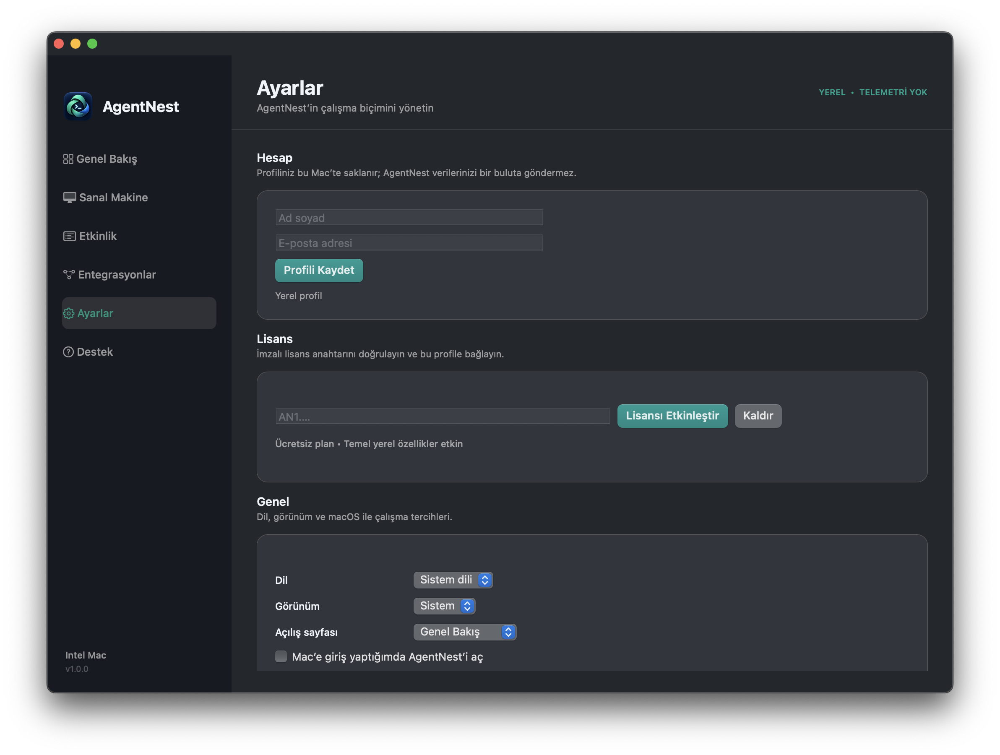

01İZOLASYON
Gerçek bir Linux alanı, belirgin bir sınır.
QEMU/HVF içindeki Ubuntu; terminal, ekran, fare, klavye ve checkpoint erişimini MCP üzerinden sunar.
Codex, Claude ve diğer MCP ajanları kodu kursun, çalıştırsın, görsün ve test etsin. Günlük Mac'in ve kişisel dosyaların çalışma alanının dışında kalsın.

AgentNest, güçlü bir kodlama ajanıyla çalışırken ihtiyaç duyduğun erişimi verir; normal macOS ortamını varsayılan olarak sınırın dışında tutar.
QEMU/HVF içindeki Ubuntu; terminal, ekran, fare, klavye ve checkpoint erişimini MCP üzerinden sunar.
Komutları, ilerlemeyi ve görsel testi aynı yerel kontrol merkezinden takip et.
Bilinen temiz tabana dön veya önemli anlar için adlandırılmış checkpoint'ler oluştur.
Uygulamayı Mac'ine taşı. Ubuntu çalışma alanını tek akışta otomatik hazırla.
Codex, Claude, Cursor veya standart bir MCP istemcisini rehberli kurulumla bağla.
Ajan kodu Linux'ta çalıştırırken ilerlemeyi izle; gerektiğinde doğru ekrana müdahale et.
Türkçe ve İngilizce arayüz; açık, koyu veya sistem görünümü.

AgentNest model trafiğini aracıdan geçirmez, sohbet geçmişini tutmaz ve kullanım telemetrisi göndermez. Ajanın mevcut hesabıyla doğrudan çalışır.
GitHub'da inceleQEMU 11.1.1 dahildir. Homebrew veya ayrı bir sanallaştırma aracı gerekmez.
Intel Mac için AgentNest'i indir. Birkaç adımda yerel Ubuntu çalışma alanını hazırla.